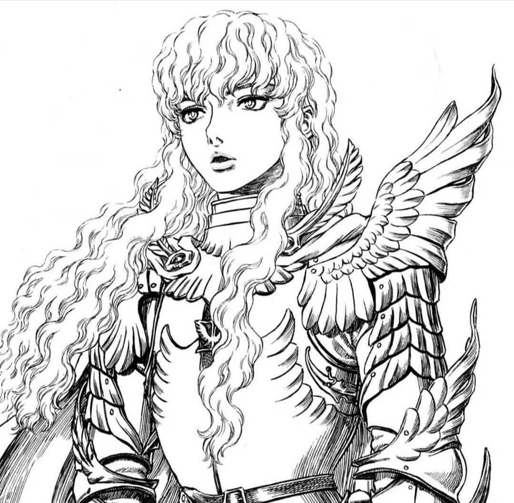

Griffith

Griffith é de estatura média e uma estrutura muscular atlética, com um tom de pele um pouco
pálido.
Ele tem cabelos brancos e encaracolados (muitas vezes visto liso no anime) e olhos azuis. Ele é
distinto por ser um homem muito bonito, e tem características femininas que muitos dizem superar
as
das mulheres, enquanto alguns dificilmente podem dizer que ele é um homem.
Personalidade
Personalidade
Griffith tem continuamente focado em seu objetivo de alcançar seu sonho de obter seu próprio
reino,
disposto a sacrificar tudo para alcançá-lo. Desde o nascimento ele sempre "conheceu o caminho
para
cima", o que lhe permitiu comandar vários soldados com sua habilidade carismática. Ele se
identifica
fortemente com o seu sonho, tanto que ele construiu toda a sua identidade em torno dele. Seu
egoísmo
foi agravo pelo seu próprio carisma, e o fato de que todo mundo que ele conhece ficou fascinado
por
ele, seja como líder divino ou um inimigo poderoso, fez ele se isolar dos outros e de seus
próprios
sentimentos. Griffith era tão encantado com sua personalidade idealizada que ele não conseguia
lidar
muito bem com a perda. Na verdade, um dos maiores fardos de Griffith foi a culpa infligida a ele
pelos companheiros que morreram por ele. Nos primeiros dias dos Gaviões, ele encontrou o cadáver
de
uma criança soldado que havia servido a ele, e ele estava tão profundamente afetado por isso que
ele
se prostituiu a um Barão pervertido para conseguir financiamento rápido, a fim de evitar o risco
de
mais mortes desnecessárias em outras batalhas. A experiência o traumatizou profundamente, então
ele
se isolou de seus companheiros.
Embora ele tenha negado, nunca tendo considerado seus aliados como amigos, ele considerou Guts
como
o seu amigo querido, em vez de um peão para seus objetivos. Estes sentimentos beiravam a paixão,
a
ponto de Griffith arriscar a sua própria vida para proteger Guts, enquanto confiava nele para
ser
seu assassino, com a opção de recusar. Mas quando Guts deixou os Falcões, profundamente aflito
pelas
ações de Guts, isso quebrou Griffith, já que ele caiu em depressão.
Após a sua transformação em Femto, Griffith descartou completamente suas moralidades, agora
apenas
existindo para realizar o seu sonho, junto com a vontade coletiva da humanidade. Griffith
demonstrou
grande crueldade ao se tornar Femto, seu primeiro ato depois de se tornar um membro da Mão de
Deus
sendo violar sexualmente Casca e multar o filho não nascido dela com a sua semente, como um ato
de
vingança contra Guts, por deixá-lo. Embora agora distante e vendo a humanidade de uma
perspectiva
determinista, sem medo ou confusão, a capacidade de empatia de Griffith, levando em conta seu
estado
como membro da Mão de Deus, é discutível; quando ele vê Guts na colina das espadas, ele deseja
saber
se existe ou não alguma coisa irá "influenciar seu coração", algo que ele não iria considerar
fazer
se ele soubesse com certeza que ele não sentia mais nada por Guts. Durante a segunda batalha de
Guts
com Zodd, Griffith, com o coração acelerado, protege Casca de uma cascata de pedras. Ele
justifica o
ato, alegando que era os sentimentos da Criança Demoníaca de Guts infundidos em seu corpo
afetando
ele, embora isto poderia ser interpretada como negação.
História
Como uma criança de nascimento plebeia, destinado a governar algum dia um reino próprio,
recebendo o
Behelit vermelho, Griffith criou o Bando do Falcão com um mineiro chamado Pippin, um ex-bandido
chamado Corkus, um acrobata chamado Judeau, e uma garota de 12 anos chamada Casca, Griffith
salvou
Caska de um nobre que a comprou para estrupa-la. A grande chance de Griffith veio pela primeira
vez
quando ele e seu grupo foram trazidos a serviço de Lorde Gennon, o qual ofereceu remuneração
extra
para o jovem dormir com ele. Dois anos mais tarde, Griffith encontrou Guts e o derrotou duas
vezes
para ganhar sua servidão entre os Falcões, Rickert também está envolvido.
Uma vez que o Bando dos Falcões derrotaram os Cavaleiros Ovelha Negra da Lança de Ferro de
Tudor,
eles foram recrutados por Midland para sua guerra contra Tuder. Durante um cerco, Guts e
Griffith
encontram o demônio Nosferatu Zodd, o Imortal, o qual nota o Behelit de Griffith e
enigmaticamente
adverte Guts do seu significado em sua condenação. Com o tempo, a ascensão de Griffith é mal
recebida pelos nobres, com Julius enviando um assassino atrás dele. Mas a tentativa do
assassinato
fracassa e Griffith revida enviando Guts para matar Julius e o instrui para não deixar
testemunhas
no caso de ser visto. O fato de que Guts foi forçado a matar o filho de Julius, Adonis, como
resultado, além de ouvir Griffith discutir seus ideais com a princesa de Midland, Charlotte,
provoca
uma desavença entre os dois, forçando Guts a partir, tendo se tornado forte o suficiente para
ser
visto como um igual de Griffith. Mas Griffith não aceitou muito bem a saída de Guts, ficando
cada
vez mais depressivo, o que fez ele ser preso na Torre do Renascimento, depois de ser pego
dormindo
com Charlotte em um lapso de julgamento.
Na época em que Guts e os membros adultos do Bando dos Falcões vieram resgatá-lo, Griffith foi
deixado mudo e aleijado, tendo sido torturado por um ano inteiro. Quando Griffith tenta coeter
suicídio ao perceber ao que ele foi reduzido a um ser inútil , ele machucou-se e sangrou e ativa
o
Behelit vermelho para o Eclipse. Griffith, Guts, Casca, Pippin, Corkus, Judeau e os demais
Falcões
no local ali, e os Apóstolos reunidos, foram transportados para um Interstício, onde a Mão de
Deus
se manifestou para receber Griffith. É dado a Griffith a escolha de renascer como o último da
Mão de
Deus, sabendo que sua transformação significaria que seus aliados seriam sacrificados aos
Apóstolos.
Griffith aceita a oferta por causa de seu sonho e, enquanto Pippin, Corkus, e Judeau e os
Falcões
eram mortos, aparece diante dele o Idéia do Mal por trás da Mão de Deus. Ele contou que tudo o
que
ele passou foi o que levou a esse momento, Griffith então aceitou seu destino de se tornar um
rei,
criando o seu corpo ideal.
No momento em que apenas um Guts contido e uma Casca inconsciente restaram vivos, Griffith
emerge de
sua metamorfose como Femto e começa a violar sexualmente Casca enquanto Guts assite tudo,
enquanto
tenta se libertar, perdendo seu braço e olho no processo. Embora o Cavaleiro Crânio salva Guts e
Casca de seu destino, o dano das terríveis coisas que eles passaram fez com que Casca fosse
deixada
em um estado de mente sem noção de nada, enquanto o estupro de Griffith mudou o filho não
nascido
que ela ganhou de sua noite com Guts em uma criatura deformada. Guts jurou se vingar de
Griffith,
embora ele foi avisado de que sua morte viria no momento em que ele acabou com o sonho de
Griffith.
Por causa do status de Griffith como um dos membros da Mão de Deus, ele não era mais do reino
físico
e originalmente só poderia se manifestar temporariamente através de médiuns, como cadáveres ou
quando um Behelit é ativado. Mas isso mudou quando um Apóstolo em Forma de Ovo foi escolhido
para
invocar uma Cerimônia de Encarnação na Torre da Convicção, ingerindo a criança moribunda de
Casca
antes de se oferecer como um receptáculo para Griffith, para ele recuperar plenamente a sua
presença
física. De lá, após se reunir com Rickert e revelar para os jovens como os seus camaradas
Falcões
morreram, Griffith criou o Novo Bando dos Facões com Zodd, Grunbeld, Locus, Rakshas, Irvine e
uma
psíquica humana chamada Sonia. Embora muitos dos Apóstolos juraram seguir Griffith, apenas
Ganishka
se recusou, já que ele procurava conquistar o mundo, com Griffith se tornando um campeão para a
Ordem Religiosa da Santa Sé. A batalha deles acabou culminando em Ganishka entrando em seu
Behelit
Artifial para sugar a vida de tudo na conquistada Windham para transcender em um ser semelhante
a um
deus para enfrentar Griffith, o qual assumiu sua forma de Femto para derrotar o Apóstolo
evoluído,
enquanto criava Falconia como o centro da Midland terraformada, com criaturas de outros reinos
trazidas para esta realidade.
A partir daí, Griffith criou uma sociedade utópica, reduzindo a sede de sangue dos Apóstolos com
combates de gladiadores para que eles pudessem servir como protetores da humanidade dos monstros
à
espreita fora dos muros de Falconia.